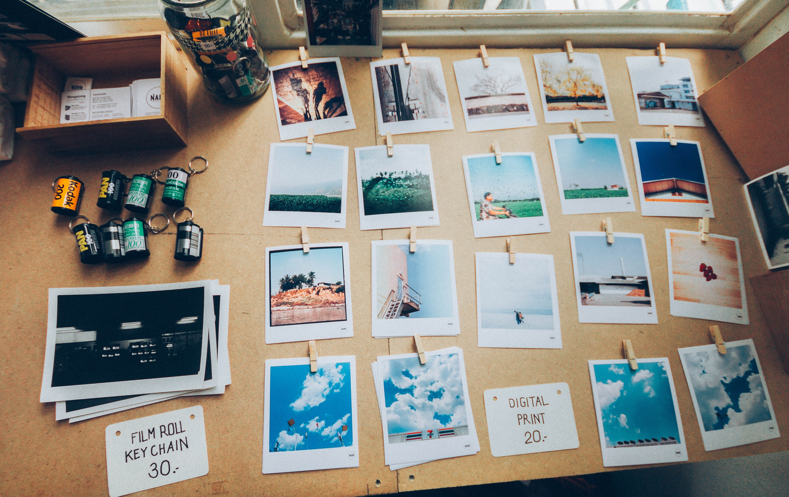

Interests
 My story starts with an Canon Rebel T5 DSLR cam, with an emotional content
for taking best images over strength and impact over the years, regardless of the number of times they are viewed.
For getting an instance, a landscape image cuts across all political and national boundaries,
it transcends the constraints of language and culture.
My story starts with an Canon Rebel T5 DSLR cam, with an emotional content
for taking best images over strength and impact over the years, regardless of the number of times they are viewed.
For getting an instance, a landscape image cuts across all political and national boundaries,
it transcends the constraints of language and culture.
“A portrait is not made in the camera but on either side of it.” -By Edward Steichen(1879 – 1973)

Talking out my Travel history, I have a got solid travelling story starting with spectular cities of europes including,
Paris, France, Amsterdam, Switzerland, Germany, and United Kingdom, London are all those countries which I have visited ever between (2001-2003).
Narrowing down to Indian ocean and pacific ocean, I have visited Australia, New Zealand, Malaysia, and Singapore between (2004-2005).
“People don’t take trips, trips take people.” ~ John Steinbeck
Feather Collection & Football
Feathers positively symbolize trust, integrity, strength, wisdom, power, and freedom.
The foundation of this hobby was created in my first ever summer vacation project know was
Collection of feathers. At initial stage, I just have to collect 10 different birds feather but later on
after scoring A+ grade in project, I carried on collecting more feathers that lead me to explore many jungles back in India,
and right now I am having approx. 50 different bird feathers.
“A willing heart adds feather to the heel.”- Joanne Baillie
Playing Football, was one of the best activities which i pursed in my teenage life.
Since, being Captain of my School football team, I have win many tournaments under my Captaincy.
Speaking about sports which leads to many life achieveing qualities like, Team work, Leadership,
Trust, Determination and many more skills.
“If you fail to prepare, you’re prepared to fail.” – Mark Spitz